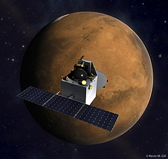

Chandrayaan-1, India's first mission to Moon, was launched successfully on October 22, 2008 from SDSC SHAR, Sriharikota. The spacecraft was orbiting around the Moon at a height of 100 km from the lunar surface for chemical, mineralogical and photo-geologic mapping of the Moon. The spacecraft carried 11 scientific instruments built in India, USA, UK, Germany, Sweden and Bulgaria. After the successful completion of all the major mission objectives, the orbit has been raised to 200 km during May 2009. The satellite made more than 3400 orbits around the moon and the mission was concluded when the communication with the spacecraft was lost on August 29, 2009.